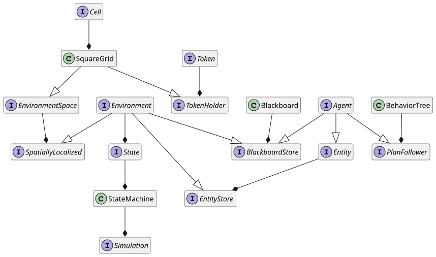
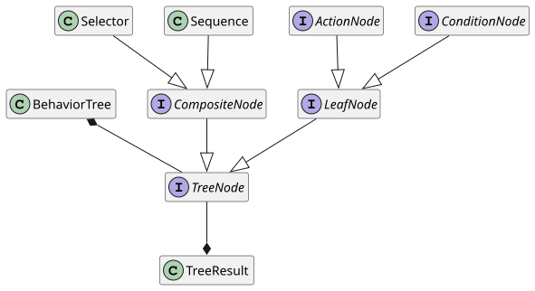
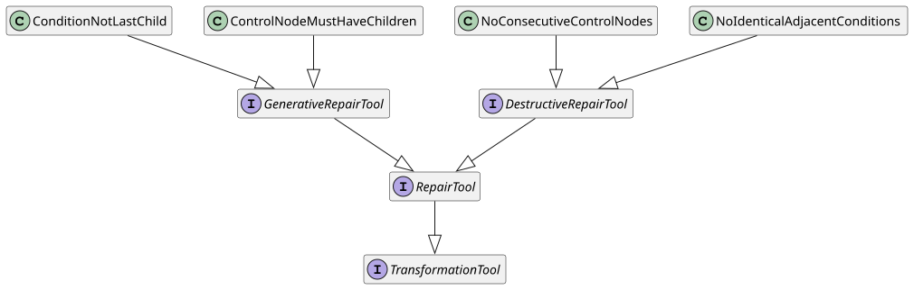
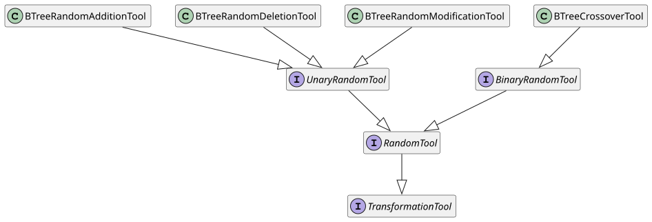
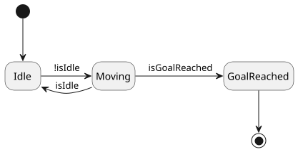

Università di Bologna · Campus di Cesena
Corso di Laurea Magistrale in Ingegneria e Scienze Informatiche
Riccardo Battistini |
0001034968 |
Introduzione
Il progetto consiste nell’implementazione di un controller evolutivo per un robot progettato per navigare in una griglia bidimensionale. Il controller utilizza un albero di comportamento, appreso tramite un algoritmo genetico, per gestire comportamenti come l’evitamento degli ostacoli e la fototassi positiva.
Design
Il progetto si compone di tre moduli:
-
simulation: include le funzionalità richieste per implementare una simulazione, fornendo dei concetti generici, come quelli di agente e ambiente, a partire dai quali implementare delle applicazioni; -
evolution: definisce i componenti dell’algoritmo con cui si evolve un controller robotico, nella forma di un albero di comportamento e tramite programmazione genetica; -
laboratory: include un’applicazione di esempio. Utilizza il modulosimulationper implementare il dominio della simulazione scelto e il moduloevolutionper l’evoluzione di un controller.
Modulo per la simulazione
Il modulo simulation include le astrazioni per modellare:
-
macchina a stati finiti, per esprimere lo stato della simulazione osservabile in un dato istante temporale di una simulazione discreta e per la raccolta di statistiche;
-
lavagna, che funge da base di dati chiave-valore mantenuta in memoria;
-
ambiente, costituito da uno spazio, che può essere una griglia, da un insieme di entità e da una lavagna;
-
entità, come un agente che segue un piano e memorizza informazioni in una propria lavagna;
-
albero di comportamento, che consente di implementare una specifica eseguibile del comportamento di un agente.

In Figura 1 è mostrato il diagramma delle classi relativo a questi concetti. Si osserva che la maggior parte sono rappresentati tramite interfacce, concepite per essere estese dalla specifica applicazione in base al dominio della simulazione.
In Figura 2 è mostrato il diagramma delle classi relativo alla modellazione dell’albero di comportamento. Si osservano quattro tipologie di nodi:
-
nodo di controllo
Sequence. Esegue una sequenza di azioni o condizioni in ordine. Restituisce un successo solo se tutti i suoi figli completano con successo. Se uno dei figli fallisce, l’esecuzione del nodo termina con un fallimento; -
nodo di controllo
Selector. Esegue i suoi figli in ordine fino a quando uno di essi fallisce. Se un figlio ha successo, il nodo termina con un successo, ignorando i restanti figli. Se tutti i figli falliscono, il nodo termina con un fallimento; -
nodo foglia
Condition. Verifica una condizione specifica nel contesto dell’esecuzione. Restituisce un successo o un fallimento in base al risultato della condizione valutata, senza eseguire ulteriori azioni; -
nodo foglia
Action. Implica un’interazione attiva dell’agente con l’ambiente e restituisce un successo o un fallimento in base al risultato dell’azione intrapresa.

L’esecuzione dell’albero si realizza propagando un segnale che rappresenta un tick della simulazione a partire dalla radice e restituendo un oggetto di tipo TreeResult.
La risoluzione di ciascun nodo dell’albero è istantanea, perciò ci si limita a tracciare gli stati di successo e fallimento.
Modulo per l’evoluzione
Il modulo evolution fornisce l’implementazione di diversi concetti relativi al mondo della programmazione genetica e funge da ponte tra la libreria Jenetics e le astrazioni di albero di comportamento e simulazione implementate.
In particolare sono state definite le classi:
-
BTreeGeneeBTreeChromosome: estendono rispettivamente le classiGeneeChromosomedi Jenetics. Definiscono una codifica completa e minimale che include le informazioni sufficienti a rappresentare ogni possibile soluzione del problema e che contiene solo quelle necessarie a rappresentare una soluzione del problema. Ciascun individuo della popolazione, ogni fenotipo, ha un genotipo formato da un unico cromosoma. Il cromosoma a sua volta ha un unico gene, il cui allele è un albero di comportamento. -
BTreeMutator: estende la classeMutatordi Jenetics e definisce le operazioni di mutazione che possono essere effettuate sull’albero; -
BTreeCrossover: estende la classeCrossoverdi Jenetics e definisce come avviene il crossover di due alberi; -
BTreeConstraint: estende la classeConstraintdi Jenetics e fornisce l’implementazione dei metodi per effettuare la riparazione di un individuo non valido.

In modo analogo a [1], sono state implementate operazioni di crossover e mutazione. Sono disponibili tre tipi di mutazione: aggiunta, rimozione o modifica di un nodo dell’albero. In Figura 3 è mostrato un esempio di crossover, implementato come uno scambio di sottoalberi.
Oltre a queste due operazioni, ne sono state introdotte alcune per la validazione e la manipolazione della struttura dell’albero, sia per l’uso come primitive per la mutazione che per la riparazione degli alberi e la validazione degli individui di una popolazione. In Figura 4 e Figura 5 sono mostrati i relativi diagrammi di classe.


La trasformazione degli alberi ha lo scopo di eliminare le combinazioni di nodi che non hanno effetto sull’esecuzione dell’albero, sia tramite aggiunta che rimozione di nodi. Tra le operazioni effettuate ci sono:
-
l’aggiunta di un nodo di tipo azione nel caso ci sia un nodo di controllo senza figli;
-
l’aggiunta di un nodo di tipo azione come ultimo figlio, nel caso ci sia un nodo di controllo che ha come ultimo figlio un nodo di condizione;
-
la rimozione di un nodo di condizione nel caso ci sia un nodo di condizione identico immediatamente precedente;
-
la rimozione di un nodo di controllo nel caso ci sia un nodo di controllo dello stesso tipo nella gerarchia dei nodi, immediatamente precedente o successivo. I figli del nodo di controllo possono essere promossi al livello in cui si trovava il padre oppure eliminati, a seconda della configurazione.
L’utilizzo di operazioni di riparazione permette di esplorare lo spazio degli stati in modo più uniforme di quanto avverrebbe se ci si limitasse a scartare gli individui non validi [2 p. 63].
Modulo per la sperimentazione
Il modulo laboratory fornisce l’implementazione di una applicazione di esempio avente come dominio quello mostrato in Listato 1.
Un robot compie spostamenti in un ambiente definito come una griglia quadrata bidimensionale composta da celle e token. Le celle possono essere o meno navigabili. I token rappresentano delle luci o la posizione iniziale del robot. Il robot può solo muoversi in avanti, a sinistra o a destra. È incentivato a seguire la luce. È penalizzato in caso di collisioni con gli ostacoli e con i confini della griglia, oppure se si sposta su celle già visitate o se rimane fermo. Il compito del robot è di identificare il percorso ottimale, in presenza di vincoli e incertezze. In particolare deve deve massimizzare una funzione di ricompensa, dirigendosi verso la luce ed evitando gli ostacoli o i confini della griglia.
Ciascun individuo della popolazione contiene un albero ottenuto tramite generazione casuale. I nodi impiegati per la generazione degli alberi, la mutazione e la riparazione sono scelti a partire dal registro di nodi foglia impiegato per eseguire l’applicazione. I nodi disponibili per la sperimentazione fanno parte di due gruppi.
I nodi del primo gruppo sono:
-
checkForAndStore{Goal,Obstacle,Boundary,Visited}: restituisce un successo solo se è presente l’entità della griglia specificata in una qualsiasi delle quattro direzioni cardinali ed entro un raggio predefinito. L’impostazione predefinita controlla le celle adiacenti al robot. Nel caso siano identificate le entità specificate, si memorizzano i punti corrispondenti nella lavagna del robot; -
turnToAvoidStored: restituisce un fallimento nel caso non ci siano punti memorizzati nella lavagna del robot. In caso contrario orienta il robot in una direzione casuale che evita il movimento sulle celle in corrispondenza dei punti indicati; -
turnToFollowStored: restituisce un fallimento nel caso non ci siano punti memorizzati nella lavagna del robot. In caso contrario orienta il robot in una direzione casuale tra quelle che consentono il movimento sulle celle in corrispondenza dei punti indicati;
I nodi del secondo gruppo sono:
-
checkFor{Goal,Obstacle,Boundary,Visited}{Forward,Left,Right}: restituisce un successo solo se è presente l’entità della griglia specificata nella direzione fornita ed entro un raggio predefinito. L’impostazione predefinita controlla le celle adiacenti al robot nella direzione fornita; -
turnTo{Left,Right}: fa muovere il robot nella direzione indicata di una cella. Se il movimento comporta lo scontro con un ostacolo o il superamento dei confini della griglia, restituisce un fallimento, altrimenti un successo;
I seguenti nodi sono presenti in entrambi i gruppi:
-
stop: è un nodo azione che restituisce sempre un successo ma non alcun effetto. -
turnRandomly: è un nodo azione che imposta la direzione del robot in modo casuale; -
isNearerLight: è un nodo condizione restituisce un successo solo se il robot si è avvicinato alla luce rispetto all’ultimo spostamento; -
moveForward: è un nodo azione che fa muovere il robot di una cella in avanti, in funzione della direzione verso cui è orientato.
L’ambiente è modellato tramite celle libere o che contengono un ostacolo e tramite un token che indica la posizione iniziale del robot e uno che indica la posizione della luce da raggiungere. Si impiega una funzione di generazione casuale che imposta la posizione iniziale del robot e la luce agli opposti di una griglia quadrata. Gli ostacoli sono piazzati casualmente in modo da lasciare almeno un percorso libero tra la posizione di partenza e l’obiettivo.
La macchina a stati finita è modellata come mostrato in Figura 6. Si osserva l’impiego di tre stati, GoalReached, Idle e Moving. Tracciare la transizione tra questi stati permette di raccogliere statistiche sull’andamento della simulazione, fornendo dati che sono poi utilizzati per il calcolo della funzione di fitness.

Implementazione
Di seguito si approfondiscono alcuni degli aspetti implementativi ritenuti maggiormente rilevanti per il progetto.
Tecnologie Impiegate
Il progetto è stato implementato utilizzando:
-
Git per il controllo di versione;
-
il JDK Eclipse Temurin (v. 21.0.3);
-
il linguaggio di programmazione Kotlin (v. 2.1);
-
il sistema di build automation Gradle (v. 8.12);
-
la libreria per la programmazione genetica Jenetics (v. 8.1);
-
il linguaggio di markup Asciidoc e Asciidoctor (v. 2.0.22) per la documentazione.
Per un elenco esaustivo delle librerie impiegate e delle relative versioni si rimanda al catalogo delle versioni.
Note implementative sul crossover e la mutazione
Le operazioni di crossover e mutazione sono state definite come manipolazioni della struttura dati dell’albero senza utilizzare una rappresentazione intermedia come stringa, a differenza di quanto svolto in [1].
Le due tipologie di operazioni sono state implementate in questo modo:
-
nel crossover si sceglie casualmente un nodo di controllo in ciascuno dei due alberi fornito in ingresso. Dopodiché si scambiano i due sottoalberi selezionati, in modo che il sottoalbero del primo albero sia posto dove si trovava il sottoalbero del secondo, e viceversa. L’operazione si applica a due alberi e restituisce due alberi modificati;
-
la mutazione esegue una delle tre operazioni di aggiunta, rimozione o modifica di un nodo con il 33% di probabilità per ciascuna di esse. In particolare:
-
nell’aggiunta si ha una probabilità del 50% di selezionare un nodo di controllo e del 50% un nodo foglia. Nel secondo caso c’è una probabilità del 50% di scegliere o un nodo azione o un nodo condizione. La probabilità di scegliere uno specifico nodo azione o condizione dipende dal numero di nodi di quel tipo che compongono il registro;
-
nella rimozione si sceglie un nodo dell’albero casualmente, indipendentemente dal suo tipo. Nel caso il nodo rimosso sia di controllo, si può scegliere se preservare i suoi figli, promuovendoli al livello in cui si trovava il nodo di controllo, oppure se eliminarli. La modalità di funzionamento è definita dall’esperimento. Non è possibile eliminare il nodo radice;
-
nella modifica di un nodo si svolgono azioni diverse a seconda del tipo di nodo. Nel caso di un nodo di controllo può comportare o lo scambio di tipo tra selettore e sequenza preservando i figli, oppure la conversione in un nodo foglia, promuovendo i figli allo stesso livello del nodo di controllo. Nel caso di un nodo foglia può determinare o la sostituzione con un nodo di controllo oppure la sostituzione con un qualsiasi altro nodo del registro di nodi.
-
Impiego di un registro di nodi foglia
È stato implementato il pattern Flyweight perché il pool di nodi foglia sia condiviso da tutti gli alberi. In questo modo, indipendentemente dal numero di alberi istanziati durante l’esecuzione dell’algoritmo genetico, esisterà una sola istanza di ciascun tipo di nodo foglia.
Definizione della funzione di fitness
La funzione di fitness è definita in modo da penalizzare le generazioni che non raggiungono l’obiettivo e da ricompensare le porzioni di albero che costituiscono un buon materiale genetico.
La valutazione avviene a partire dalle statistiche raccolte sull’andamento di una simulazione, ovvero:
-
distanza iniziale dalla luce;
-
distanza finale dalla luce;
-
numero di iterazioni con collisione;
-
numero di iterazioni in cui l’agente è fermo;
-
numero di celle rivisitate;
-
numero di iterazioni effettuate;
-
dimensione dell’albero di comportamento.
La distanza iniziale e finale dalla luce sono impiegate per il calcolo della ricompensa per la fototassi. Il premio è linearmente proporzionale a quanto l’agente si è avvicinato alla luce se c’è stato un avvicinamento, altrimenti è pari zero. Il risultato è normalizzato, in modo che il premio non dipenda dal valore assoluto della distanza. La formula corrispondente in pseudocodice è la seguente:
when {
d_start - d_final <= 0 then 0
else ((d_start - d_final) / d_start) * w_phototaxis
}
dove:
-
d_startindica la distanza iniziale dalla luce; -
d_finalindica la distanza finale dalla luce; -
w_phototaxisindica il peso della ricompensa per la fototassi.
Il numero di iterazioni con collisione è utilizzato per il calcolo della penalità dovuta alle collisioni. L’obiettivo è disincentivare i comportamenti che determinano un maggior numero di collisioni rispetto agli altri. Il calcolo avviene dividendo il numero di step con collisione per il numero di step totali, in modo da normalizzare il risultato. La formula corrispondente è la seguente:
-(s_collision / s_total) * w_collision
dove:
-
s_collisionindica il numero di iterazioni con collisione; -
s_totalindica il numero di iterazioni totali; -
w_collisionindica il peso della penalità per le collisioni.
La penalità legata al numero di iterazioni in cui l’agente non si muove spinge il processo di evoluzione a generare alberi di comportamento che restituiscono uno stato di successo, in quanto l’agente non compie azioni in un’iterazione se l’albero restituisce un fallimento. Il calcolo della penalità avviene nel seguente modo:
-(s_idle / s_total) * w_idle
dove:
-
s_idleindica il numero di iterazioni senza movimento; -
w_idleindica il peso della penalità per l’assenza di movimento.
Il numero di celle rivisitate incentiva la ricerca di percorsi efficienti, ovvero che riducono il backtracking il più possible. Insieme al numero di iterazioni effettuate, consente di penalizzare percorsi eccessivamente lunghi. La penalità complessiva è calcolata in modo analogo a quella per le collisioni:
-(s_backtracking / s_total) * w_backtracking
dove:
-
s_backtrackingindica il numero di iterazioni in cui l’agente si muove su un cella precedentemente visitata; -
w_backtrackingindica il peso delle celle rivisitate.
La dimensione dell’albero di comportamento consente la definizione di una penalità per disincentivare l’evoluzione di controller troppo complessi. È calcolata in questo modo:
when {
s_tree >= s_maxTree then - w_treeComplexity
else 0
}
dove:
-
s_treeè la dimensione dell’albero; -
s_maxTreeè la massima dimensione dell’albero suggerita; -
w_treeComplexityè il peso della penalità per la dimensione dell’albero.
Il risultato finale si ottiene sommando i singoli contributi e può comportare il calcolo della media dei valori di fitness ottenuti su più di un ambiente di test, ovvero su più griglie. In questo modo si migliora il grado di robustezza del controller e la sua capacità di generalizzazione.
DSL per alberi di comportamento e griglie
Per facilitare la definizione degli alberi di comportamento manuale, è stato implementato un DSL interno per realizzare una loro specifica concisa. Un esempio di utilizzo è mostrato in Listato 2.
btree {
+sel("Navigation") {
+seq("Phototaxis") {
+checkForAndStore(setOf(GreenLight))
+turnToFollowStored
+moveForward
}
+seq {
+sel {
+seq("ObstacleAvoidance") {
+checkForAndStore(setOf(Obstacle, Boundary))
+turnToAvoidStored
}
+turnRandomly
}
+moveForward
}
}
}In modo analogo è stato definito un DSL per la specifica della struttura della griglia, un cui esempio di utilizzo è mostrato in Listato 3 e la relativa rappresentazione in Listato 4.
grid(
DIMENSIONS,
mapOf(
'o' to { p: Point -> Obstacle(p) },
'c' to { p: Point -> Clear(p) },
),
) {
'c' + 'c' + 'o' + 'c' + 'c' + 'c' -
'c' + 'o' + 'c' + 'c' + 'c' + 'c' -
'c' + 'o' + 'c' + 'c' + 'c' + 'c' -
'c' + 'o' + 'c' + 'o' + 'c' + 'c' -
'c' + 'c' + 'c' + 'o' + 'c' + 'c' -
'c' + 'o' + 'c' + 'c' + 'c' + 'c'
}. e quelle occupate da un ostacolo O e tra i token che denotano la posizione iniziale del robot S, la posizione corrente del robot B e la luce che deve essere raggiunta, ovvero l’obiettivo G.| S | . | O | . | . | . |
| . | O | . | . | . | . |
| . | O | . | . | . | . |
| B | O | . | O | . | . |
| . | . | . | O | . | . |
| . | O | . | . | . | G |Valutazione
Test e qualità del codice
Al fine di garantire il corretto funzionamento dell’algoritmo genetico è stata realizzata una suite di test per verificare il funzionamento delle operazioni necessarie alla manipolazione degli alberi e alla definizione del loro grado di fitness nelle simulazioni. Inoltre è stato verificato il funzionamento della simulazione e dei suoi componenti.
I test sono stati realizzati impiegando il formato delle ShouldSpec, introdotto dalla libreria Kotest.
Sono disponibili nel modulo laboratory.
Tramite Kover è stato misurato il grado di coverage per il codice relativo ai moduli simulation e laboratory, pari a circa il 50%.
Per quanto riguarda la qualità del codice sono stati impiegati gli strumenti Ktlint e Detekt, in modo da stabilire delle regole di formattazione e da eliminare i code smell più comuni.
Esperimenti
I test sono stati eseguiti su un computer con un processore Intel Core i7-10700 @4.8 GHz e 16 GB di RAM. È stata effettuata una grid search con le seguenti configurazioni di parametri:
-
probabilità di crossover e mutazione:
-
dimensioni della griglia, numero di ostacoli e massimo numero di iterazioni di ciascuna delle tre simulazioni utilizzate per il calcolo della fitness;
-
profondità degli alberi generati casualmente, numero minimo e massimo di figli per ciascun nodo di controllo.
Per l’analisi dei risultati sono stati considerati ventiquattro esperimenti.
Il task gradle runGAWithGridSearch è stato impiegato per la generazione dei dati.
In Tabella 2 sono riportati i pesi impiegati per il calcolo della fitness in tutti gli esperimenti.
In base alla configurazione dei pesi il massimo valore di fitness ottenibile è pari a cento.
Per un elenco esaustivo dei parametri impiegati in ciascun esperimento si rimanda all’archivio degli esperimenti, disponibile qui.
|
|
|
|
Dimensioni della griglia |
5 |
7 |
9 |
Popolazione |
30 |
30 |
30 |
Generazioni max. |
1000 |
1000 |
1000 |
Steady fitness |
300 |
300 |
300 |
% Mutazione |
70 |
60 |
80 |
% Crossover |
70 |
60 |
80 |
In Tabella 1 sono riportati i parametri relativi a ciascuna delle tre configurazioni della griglia in analisi.
In Figura 7 si riporta il miglior risultato in termini di fitness per ciascuna configurazione della griglia, utilizzando Elitism come selettore dei sopravvissuti e Tournament come selettore della progenie, a confronto con i risultati ottenuti da una baseline che impiega un selettore di Montecarlo.
Si osserva che l’algoritmo genetico implementato è in grado di generare alberi più prestanti di quelli ottenuti tramite un processo di selezione casuale.
Nome del peso |
Valore |
Phototaxis Reward |
100 |
Collision Penalty |
80 |
Idle Penalty |
60 |
Backtracking Penalty |
30 |
Tree Complexity Penalty |
50 |

confident_euler, elegant_lalande e flamboyant_ride sono gli esperimenti che utilizzano il selettore di Montecarlo per ciascuna delle tre configurazione sperimentali.In Figura 8 si riporta un confronto con i valori di fitness ottenuti dagli alberi dei tre esperimenti in analisi a confronto con due alberi di comportamento programmati manualmente e un albero che determina un movimento casuale nell’ambiente di test, come baseline di confronto.
Sono mostrati i risultati ottenuti calcolando la media del valore di fitness su trentasei simulazioni ottenute considerando diverse configurazioni della griglia e un diverso numero di iterazioni per la simulazione.
I dati sono stati generati con il task gradle compareBTrees.

Si osserva che le prestazioni degli alberi generati manualmente, rispettivamente handcrafted1 mostrato in Listato 9 e handcrafted2 mostrato in Listato 10, sono leggermente migliori rispetto a quelle degli alberi ottenuti tramite evoluzione.
L’albero che assume un comportamento casuale, mostrato in Listato 8, risulta effettivamente penalizzato dalla funzione di fitness.
Per quanto riguarda gli alberi appresi, mostrati in Listato 5, Listato 6 e Listato 7, si osserva che indipendentemente dalle diverse configurazioni e dall’ambiente di test si ottengono risultati molto simili tra loro. Dal punto di vista strutturale, gli alberi ottenuti tramite evoluzione sono molto simili a handcrafted1, con la differenza che non impiegano nodi condizione direttamente relativi al comportamento della fototassi.
lucid_liskov (exp1).└── Selector
├── Sequence
│ ├── moveForward
│ ├── checkForAndStore[Obstacle, Boundary, Visited]
│ ├── turnToAvoidStored
│ └── turnToAvoidStored
└── turnRandomly
inspiring_sanderson (exp2).└── Sequence
└── Selector
├── Sequence
│ ├── checkForAndStore[Obstacle, Boundary, Visited]
│ ├── turnToAvoidStored
│ ├── moveForward
│ └── turnRandomly
├── Sequence
│ ├── turnRandomly
│ └── moveForward
└── turnToAvoidStored
wonderful_thompson (exp3).└── Selector
├── Sequence
│ ├── Selector
│ │ └── moveForward
│ ├── checkForAndStore[Obstacle, Boundary, Visited]
│ └── turnToAvoidStored
├── turnRandomly
├── Sequence
│ ├── moveForward
│ └── turnToAvoidStored
└── Stop
└── Sequence
├── moveForward
└── turnRandomly
handcrafted1. Dato che il comportamento di fototassi determina il raggiungimento della luce verde solo se si trova in una cella immediatamente adiacente al robot, la principale ragione di successo dell’albero sta nella capacità di navigare l’ambiente evitando gli ostacoli e le celle già visitate.└── Navigation
├── Phototaxis
│ ├── checkForAndStore[GreenLight]
│ ├── turnToFollowStored
│ └── moveForward
└── Sequence
├── Selector
│ ├── ObstacleAvoidance
│ │ ├── checkForAndStore[Obstacle, Boundary]
│ │ └── turnToAvoidStored
│ └── turnRandomly
└── moveForward
handcrafted2. La condizione isNearerLight permette di navigare in maniera più efficiente ampi spazi liberi da ostacoli.└── Sequence
├── Selector
│ ├── isNearerLight
│ └── Selector
│ ├── Sequence
│ │ ├── checkForAndStore[Obstacle, Boundary, Visited]
│ │ └── turnToAvoidStored
│ └── turnRandomly
└── Selector
├── moveForward
└── Sequence
├── checkForAndStore[Obstacle, Boundary, Visited]
├── turnToAvoidStored
└── moveForward
I risultati di ciascun esperimento sono riportati impiegando lo schema indicato in Listato 11, oltre che quelli mostrati in Listato 12 e Listato 13.
name: String
time: Long
generationStats: *
generation: Int
population: Int
bestFitness: Double
averageFitness: Double
time: Int
parameters: Parameters
globalStats:
leafNodes: List<String>
mutations: List<String>
reparations: List<String>
generations: Int
altered: Moments
killed: Moments
invalids: Moments
bestBTree: String
phenotypeAge: Moments
bestFitness: Moments
alterDuration: Moments
evolveDuration: Moments
selectionDuration: Moments
evalDuration: Moments
defaultSeed: Int populationSize: Int maxPhenotypeAge: Int mutationProbability: Double crossoverProbability: Double eliteCount: Int tournamentSampleSize: Int steadyFitness: Int maxGenerations: Int maxReparationAttempts: Int leafNodes: String keepChildren: Boolean, gridDimensions: Int gridObstacles: Int maxTreeDepth: Int minTreeChildren: Int maxTreeChildren: Int maxSimSteps: Int deltaTime: Int startVirtualTime: Int phototaxisReward: Double collisionPenalty: Double backtrackingPenalty: Double idlePenalty: Double treeComplexityPenalty: Double maxTreeSize: Int simRunsPerFitnessEval: Int
IntMoments, LongMoments e DoubleMoments.count: Int/Long min: Int/Long/Double max: Int/Long/Double sum: Int/Long/Double mean: Int/Long/Double variance: Double skewness: Double kurtosis: Double
Conclusioni e sviluppi futuri
Lo svolgimento di questo progetto ha portato alla realizzazione di un sistema per l’implementazione automatica di un controller robotico che consenta di portare a termine semplici compiti di navigazione in un ambiente simulato.
Il progetto è disponibile con licenza open source qui.
Tra i potenziali sviluppi futuri:
-
modificare la valutazione del grado di fitness in funzione del numero di generazioni, ad esempio per introdurre ambienti di test gradualmente più complessi;
-
sperimentare con pool di geni formati da nodi foglia di diverso genere;
-
esplorare lo spazio delle configurazioni in modo automatico;
-
definire nuovi domini di test per evolvere alberi che realizzano comportamenti di più alto livello.
Bibliografia
[1] M. Iovino, J. Styrud, P. Falco, e C. Smith, «Learning Behavior Trees with Genetic Programming in Unpredictable Environments», n. arXiv:2011.03252. arXiv, nov. 2020, Consultato: gen. 12, 2025. [Online].
[2] F. Wilhelmstötter, «Jenetics Manual». Consultato: gen. 12, 2025. [Online]. Disponibile su: https://jenetics.io/manual/manual-7.1.0.pdf.